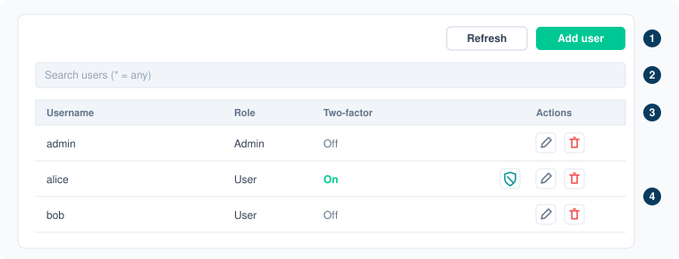
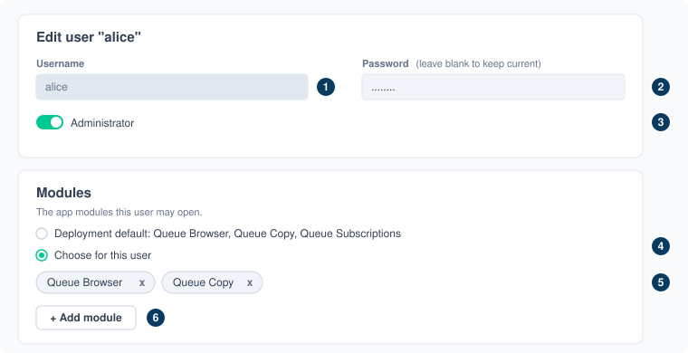
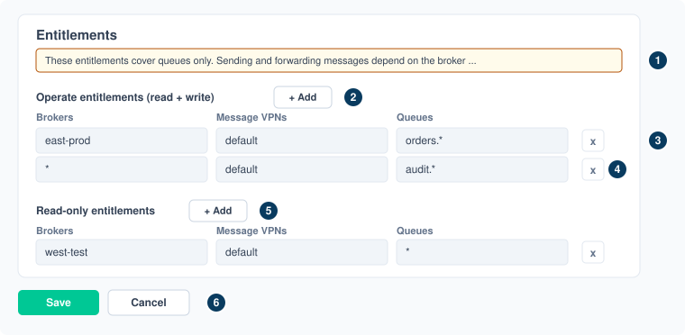
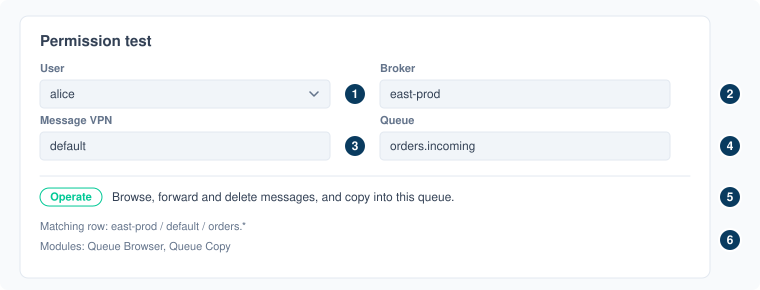

Decide who may sign in to the gateway, which brokers, Message VPNs and queues each person may reach, and which pages of the app they may open. You also reset two-factor sign-in here, and test what a saved user gets.
User Mgmt. is a page of the administration app, which the gateway serves at /solAdmin to administrators only. It needs an administrator's session. Without one, the page shows Administrator Sign-in Required and the line Sign in as an administrator to manage users. in place of everything below. How the gateway is set up, and how an operator prepares the settings these pages rely on, is in the operator's guide.
The page has two views. The list view shows every user, with the Permission test card under it. Add user and the edit button of a row replace both with the user form: three cards (the account, Modules and Entitlements) and the Save and Cancel buttons.

Admin or User) and Two-factor (On or Off), then Actions.On), Edit (the pencil) and Delete (the bin). Hover over a button to see its name, for example Edit user "alice".Type in the search box, which reads Search users (* = any). The list shows the users whose username contains your text, in any letter case. Put * in the text to stand for any run of characters: a*e finds alice. The search looks at usernames only, and it works on the list already loaded, so it never contacts the gateway.
An empty list says No users. A search that finds nothing says No users match "text"., with your text between the quotes. If the gateway cannot give the list, a red line under the table says why. Press Refresh to load the list again, for example after another administrator made a change.
User saved appears and the list returns with the user in it. Cancel returns to the list and keeps nothing.
(required) when you add a user, (leave blank to keep current) when you edit one.| Field | What it accepts | Default |
|---|---|---|
| Username | 1 to 64 characters from A-Z a-z 0-9 . _ @ -, and not only dots. Spaces around it are removed. It cannot be changed once the user exists: to rename someone, add the name you want and delete the old one. | Empty |
| Password | 12 to 128 characters. The lower limit is the Minimum password length of Gateway Settings when that is higher than 12. The page sends the password over TLS and the gateway stores only a hash of it. It is never shown again. When you edit a user, leave the box empty to keep the stored password. | Empty |
| Administrator | A switch. It lets the user open /solAdmin. It gives no access to any broker by itself: an administrator needs entitlement rows like anybody else. | Off |
| Must change password at next sign-in | A switch. While it is on, the user's next sign-in leads only to the gateway's password page until they set a new password. See "Forcing a password change" below. | On for a new user. What is saved, when you edit one. |
Edit user "alice", filled with what is saved.The page sends the whole user each time, so a save replaces the user's two switches, modules and both lists of entitlements with what the form shows.
Delete user "bob"?, and press Delete. Cancel keeps the user.The toast User deleted appears and the list reloads. The user's sessions end at once.
The Modules card sets which pages of the app a user may open: Queue Browser, Queue Copy and Queue Subscriptions. The Connections page and the About page are always shown. Which of the three the gateway offers at all, and what a user without a list of their own gets, are set in Gateway Settings (What users may open).
| Choice | What it does |
|---|---|
| Deployment default | The user gets what Gateway Settings give everyone. The modules it gives are shown as pills without a remove button, or No modules. when it gives none. This is the choice for a user you add. If the settings change, so does what this user gets. |
| Choose for this user | The user has a list of their own. It starts as what the default gives. A line under the switch still says what the default gives, for example The deployment default gives: Queue Browser, Queue Copy (or no modules). Each module is a pill with a remove button, named for screen readers Remove Queue Browser and so on. + Add module opens a menu of the offered modules that are not in the list yet; pick one to add it, and press Esc to close the menu. The button is disabled when nothing is left to add. An empty list reads No modules. |
A pill marked not offered is a module the gateway does not offer. It has no effect until Gateway Settings offer it, and you can remove it. The gateway never gives a user a module it does not offer.
When you slide the switch back to Deployment default, the user's own list is dropped on save.
The Entitlements card decides which brokers, Message VPNs and queues the user reaches. A user without a row reaches nothing.

These entitlements cover queues only. and says that the broker's own ACL profile decides where messages may go.brokers (e.g. *), msgVpns (e.g. *) or queues (e.g. *).Remove row.Each box holds a name or a pattern. A row gives access when the broker, the Message VPN and the queue all match their box. A row whose three boxes are all empty is ignored on save. A box left empty matches no name, so type * where any name will do.
| List | What its rows give | When it is empty |
|---|---|---|
| Operate entitlements (read + write) | On a matching queue: browse, forward and delete messages, and copy into the queue. | None: this user changes no queue (no delete, no copy into one). Read-only rows still let them browse. |
| Read-only entitlements | On a matching queue: browse and forward messages. No delete, and no copy into the queue. | None. With no operate rows either, this user can sign in but reaches no broker. |
A user reaches a broker's Message VPN when any row, operate or read-only, matches that broker and that Message VPN. They see the queues that the queue boxes of those rows match. Where a queue matches rows of both lists, the operate row wins. The gateway enforces the broker and the Message VPN. The queue boxes are applied by the app itself.
A pattern must match the whole name. * stands for any run of characters, including none. Every other character stands for itself: there is no ? and there are no character classes. Matching is case-sensitive, so Orders.* does not match orders.incoming.
| Pattern | Matches | Does not match |
|---|---|---|
* | Any name. | None. |
orders.* | orders.incoming, orders. | orders, Orders.incoming |
*.dlq | orders.incoming.dlq | orders.dlq.old |
east-* | east-prod | west-test |
default | default only. | default2 |
The Permission test card, under the list, shows what a saved user gets on one queue. Use it after a change, instead of asking the user to try.

Select a user....* counts as a wildcard only inside the user's rows.Pick a user and enter a broker, Message VPN and queue.| Answer | It says | Meaning |
|---|---|---|
| Operate | Browse, forward and delete messages, and copy into this queue. | An operate row matches the broker, the Message VPN and the queue. |
| Read-only | Browse and forward messages; no delete, no copy into this queue. | No operate row matches, and a read-only row does. |
| Queue hidden | Reaches this Message VPN, but no row's queue pattern matches this queue. | A row matches the broker and the Message VPN, but none matches the queue. |
| No access | No row matches this broker and Message VPN. | The user does not reach this Message VPN. |
Under the answer, Matching row: names the row that gave it, as its three boxes, and Modules: lists the modules the user may open, or none. The test reads the user as saved, never the form you have open. It cannot see the broker's own queue permissions, which still apply, and the broker and Message VPN must be in Connection Management for anyone to reach them.
The Two-factor column says On when the user has set up a code from an authenticator app. Use the reset for a user who lost their phone and their recovery codes.
On. Its tooltip is Reset two-factor for user "alice".Reset two-factor sign-in for "alice"? They will have to set it up again., and press Reset.Two-factor sign-in reset appears and the list reloads. The column reads Off.The reset ends the user's sessions. It leaves the password as it is. What the user must do at the next sign-in depends on the gateway's two-factor mode (A lost phone). A save of the user form never changes two-factor, in either direction.
The Must change password at next sign-in switch marks an account so that its owner may use only the gateway's password page until they set a new password. A password you choose for someone is one you know, and the switch makes it last for one sign-in only.
The switch takes effect at the user's next sign-in: a session that is already open goes on. Once the user has set a new password, the gateway turns the switch off. The list does not show it; open the user to see it.
The gateway also marks the first administrator it creates, named admin, unless that password came from a secret file (Start it). To change only your own password, use Change password in the account control of the sidebar.
| You change | The user, signed in at that moment |
|---|---|
| The password, the Administrator switch, or you delete the user | All their sessions end and their open broker connections close. They sign in again, with the password you set if you changed it. |
| You reset two-factor | All their sessions end and their open broker connections close. They sign in again. |
| The entitlements | They stay signed in. The gateway applies the rows to their next request, and closes any broker connection to a Message VPN they may not reach. |
| Only the Must change password at next sign-in switch | They stay signed in. Their next sign-in leads to the password page first. |
The gateway lets you change your own account. When the change ends your session, the page asks the app to sign you out, so you sign in again.
Password changed. Sign in again.Administrator flag changed. Sign in again.Delete your own account "admin"? You will be signed out. and ends with Account deleted. You have been signed out.Reset your own two-factor sign-in? You will be signed out and must set it up again. and ends with Two-factor sign-in reset. You have been signed out.User saved.A refusal on the form shows in red under Save and keeps what you typed. A refusal of a delete or a reset shows as a red toast. A refusal while loading the list shows under the table. A refusal that says your session has ended shows as a red toast on every page, and the app signs you out.
| Message | Why | What to do |
|---|---|---|
Username is required. | The username box is empty. | Type a username. |
A password is required for a new user. and A new user needs a password. | You add a user with an empty password. The page checks first and the gateway checks again. | Type a password. |
User "bob" already exists. Use Edit to change it. | The username is taken. | Press Cancel and edit that user, or choose another name. |
Username must be 1 to 64 characters from A-Z a-z 0-9 . _ @ -, not only dots. | The username breaks the rule in the table above. | Change the username. |
Password must be 12 to 128 characters. | The password is too short or too long. The first number is the gateway's minimum, which may be higher than 12. | Type a password within the limits. |
At least one administrator must remain. | You delete the only administrator, or clear the flag of the only administrator. | Make another user an administrator first. |
This needs an administrator. | Your account is not an administrator's. | Sign in with an administrator account. |
Your session has ended. Sign in again. | The gateway ended your session. | Sign in again. The page asks the app to sign you out. |
This user was changed by someone else since you opened it. | Another administrator saved the same user first. A dialog shows the message with Reload and Cancel. | Press Reload to see the current user, then repeat your change. Cancel keeps your form open. See Two administrators at once. |
This user was deleted by someone else. | The user is gone. A red toast shows the message and the page returns to the reloaded list. | Nothing: the user no longer exists. |
The gateway could not write its data files, so nothing was changed. Its log has the cause. | The gateway could not store the change. | Ask the operator to read the gateway's log. |
The gateway cannot write its audit log and is set to refuse changes until it can. Its log has the cause. | The gateway is set to refuse changes while it cannot record them. | Ask the operator to read the gateway's log. |
A data file (users, connections or backup settings) was edited on the gateway host since the gateway loaded it. Restart the gateway to load that edit, then make your change here. | The users file changed outside the gateway. | Ask the operator to restart the gateway. |
The gateway could not complete the request. Its log has the cause. | The gateway failed in a way it did not expect. | Ask the operator to read the gateway's log. |
Too many requests. Wait a minute and try again. | The gateway limits how fast requests may come. | Wait, then try again. |
The gateway could not be reached. and The gateway did not answer in time. If this was a change, it may still have been applied: reload to see where it stands before you try again. | The gateway did not answer. | Press Refresh and check the user before you try again. |